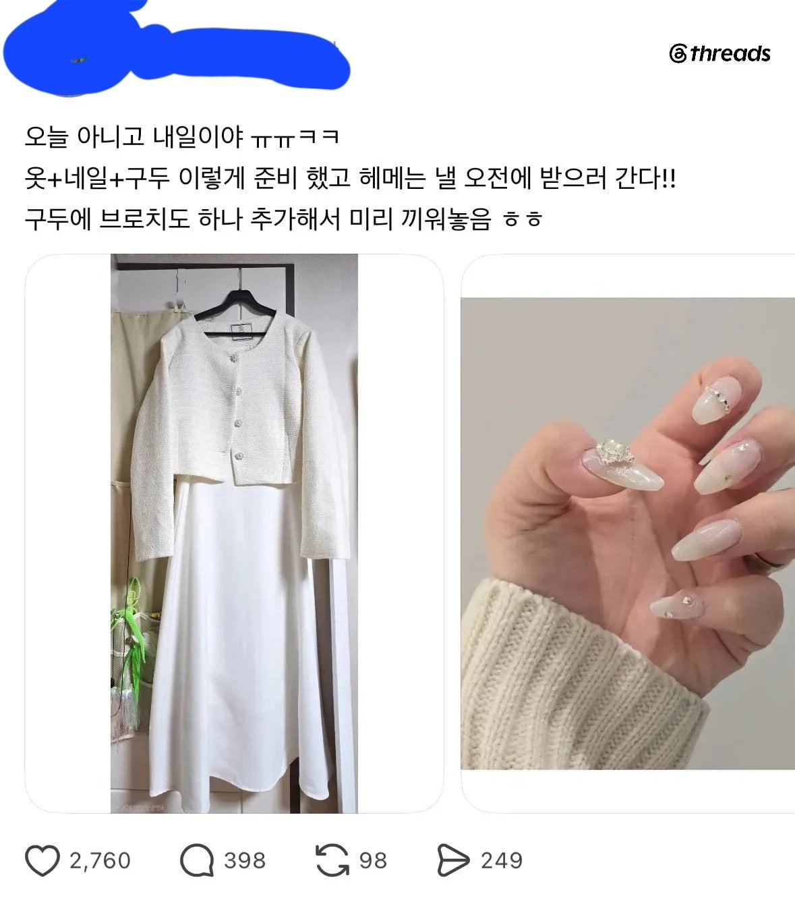

솔직히 신경도 안쓰고 오면 좋고 안오면 말고 이고 노출이 심한 옷만 아니면 단정하게입고 오면 아무 상관 없지뭐.
무슨 얼굴 몰아주기냐 옷색으로 그럴 꺼면 이쁜애들은 결혼식 다니면 안되겠네 시선이 다 이쁜애로 갈태니까 ㅅㅂ ㅋㅋ
사진보면 그런말 못함 ㄹㅇ
그렇게 확 티나고 그러지는 않는데.
확티나는게 아니고 신랑신부(그중에도 당연 신부)가 주인공이고 나머지 하객들은 배경처럼 깔려야하는데 저 흰원피스 하나로 배경이 살아지게 되고 신부가 죽는게 문제인거임
난 왜 별 생각 없지...
사진기사가 잘 보는 사람이면 찍어줄떄 흰색 옷은 뒤나 옆으로 가라고 면박줌
요즘에 저렇게 입고오면 AI로 색 보정도 해서 무의미함
사진사 잘못이라고본다